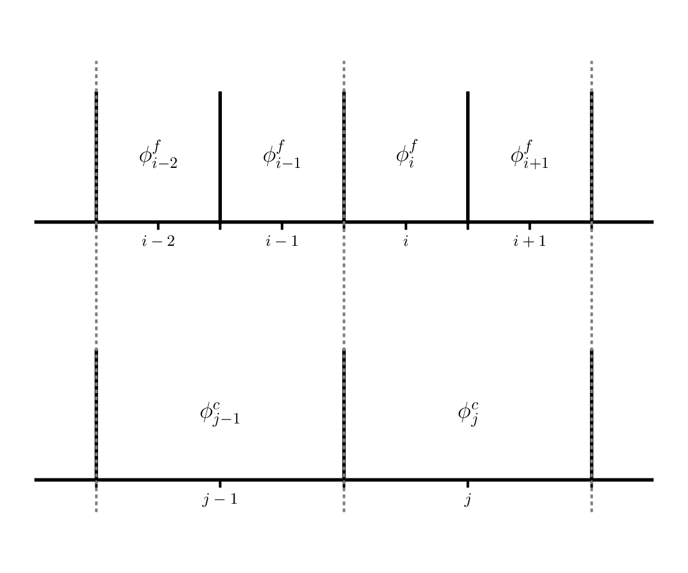

Measuring Convergence of our Euler Solver#
We measured convergence with advection by comparing to the exact solution. But what about the case when we don’t know the exact solution? We can use a grid convergence study to assess the convergence. Here’s how it works.
Pick a smooth problem – a good problem is the acoustic pulse described in this paper:
A high-order finite-volume method for conservation laws on locally refined grids
See section 4.2. You’ll do this in 1-d in our solver with periodic BCs.
Run the problem at 4 different resolutions, each varying by a factor of 2, e.g., 32, 64, 128, and 256 zones.
Compute an error between the run with N zones and the run with 2N zones as follows:
Coarsen the problem with 2N zones down to N zones by averaging 2 fine zones into a single coarse zone. This is shown below:

Here, \(\phi^f\) is a variable on the finer resolution grid and \(\phi^c\) is the variable on the coarse grid. We see that \(\phi^c_j\) has two fine grid counterparts: \(\phi^f_i\) and \(\phi^f_{i+1}\), so we would do:
\[\phi^c_j = \frac{1}{2} \left ( \phi^f_i + \phi^f_{i+1} \right )\]Compute the \(L_2\)-norm of the difference between the coarsened 2N zone run and the N zone run.
Do this for all pairs, so for the 4 runs proposed above, you’d have 3 errors corresponding to 64-128, 128-256, and 256-512.
Plot the errors along with a line representing ideal 2nd order convergence.